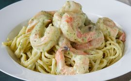

Creamy Pesto Shrimp

"Perfect as is. This is a perfect recipe to make with our 8-year old granddaughter who is just getting interested in cooking."
Ingridients
- 2 cups heavy cream
- ½ teaspoon ground black pepper
- 1 cup grated Parmesan cheese
- ⅓ cup pesto
- 1 pound large shrimp, peeled and deveined
Steps
-
Step 1
Gather ingredients together.
-
Step 2
Fill a large pot with lightly salted water and bring to a rolling boil. Stir in linguine and return to a boil. Cook pasta uncovered, stirring occasionally, until tender yet firm to the bite, about 8 to 10 minutes; drain.
-
Step 3
Meanwhile, melt butter in a large skillet over medium heat.
Stir in cream and season with pepper; cook, stirring
constantly, for 6 to 8 minutes.